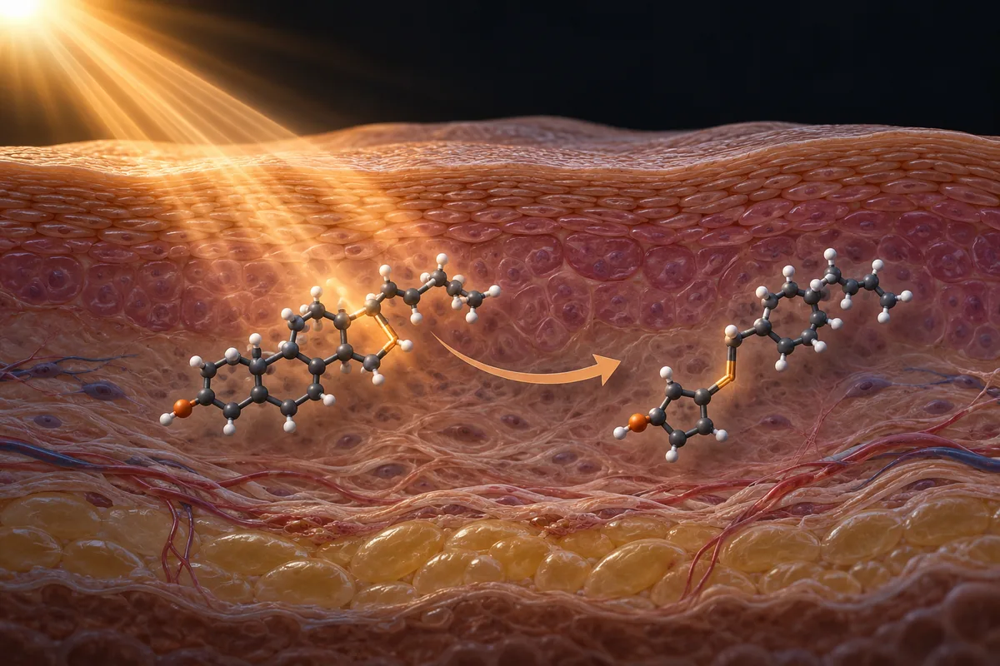

Vitamina D e exposição ao sol (testosterona)
O "+25,2% de testosterona" vem de 54 homens analisados em 2011; o mesmo grupo de Graz testou de novo, com placebo, e não achou efeito.

Material experimental. Leia antes de usar qualquer coisa daqui.
Nada nesta página é recomendação médica, prescrição ou plano de tratamento. É uma tradução organizada de protocolos que circulam em comunidades de pesquisa e, quando existe, do que ensaios publicados testaram. As duas coisas estão marcadas de forma diferente — e não são equivalentes.
A maior parte dos compostos aqui não tem aprovação da ANVISA nem da FDA para uso humano. Vários são vendidos com rótulo de "uso exclusivo em pesquisa", o que significa que não passaram por controle de pureza, esterilidade ou dosagem para consumo por pessoas. Dose descrita por comunidade não é dose validada: é o que alguém relatou ter feito.
Converse com um profissional de saúde habilitado antes de considerar qualquer um destes compostos. Se você já usa algum e sentir algo fora do previsto, procure atendimento — não espere o próximo exame de rotina.
Resumo
A vitamina D é necessária ao osso e o testículo tem receptor para ela. Homens com vitamina D baixa costumam ter testosterona um pouco mais baixa, mas os dois andam juntos como marcadores de saúde ruim. O estudo de Graz de 2011 citado nos vídeos existe: 54 homens em dieta para emagrecer, 3.332 UI por dia por um ano, testosterona de 10,7 para 13,4 nmol/L no grupo tratado. Depois, o mesmo grupo fez dois ensaios com placebo e espectrometria de massa, em homens com testosterona normal e baixa, e não achou efeito. Duas meta-análises de ensaios randomizados, de 2019 e 2026, também não acharam. No Brasil, suplemento pode ter no máximo 2.000 UI por dia para adultos.
Por que esta página existe
A vitamina D aparece descrita em vídeos curtos sobre saúde masculina que vi publicados na internet, como "hormônio esteroide disfarçado de vitamina", que estaria baixo em mais da metade dos homens e que, corrigido, subiria a testosterona total em 25,2%, melhoraria a resposta do LH, a força, os ossos e a "fadiga central", e deixaria o espermatozoide "mais rápido e em maior número". Os vídeos citam a Universidade Médica de Graz e a revista Hormone and Metabolic Research de 2011, a Universidade de Copenhague e a Universidade de Harvard. A receita é dupla: 30 minutos de sol por dia na pele, sem protetor, entre 10h e 15h, e cápsulas de 2.000 a 5.000 UI por dia com alvo acima de 30 ng/mL no exame. Uma legenda diz o contrário da fala do mesmo perfil em outro vídeo: cápsula só com deficiência grave diagnosticada e com receita.
Eu conferi. Levantei as alegações dos 3 vídeos curtos em que a vitamina D é tema ou item de combinação, separei as 20 que são verificáveis e fui atrás de cada estudo citado. Quando o vídeo nomeia uma universidade ou revista, procurei o artigo; quando dá um número, procurei o número no artigo. Nenhum número desta página veio da fonte secundária do site.
Esta página trata da vitamina D como ela é vendida (colecalciferol, a vitamina D3, e ergocalciferol, a D2) e do sol como fonte dela. A relação com o boro e a frase sobre "78% dos brasileiros deficientes" já foram conferidas em outras páginas: ver as páginas boro, zinco e magnésio.
Este site trata de assunto vizinho também em Suplementos de venda livre.
Age como hormônio, mas receptor no testículo não é prova de efeito
Parte da frase "não é vitamina, é hormônio" se sustenta. Segundo a revisão de Blomberg Jensen (2014), de Copenhague, a vitamina D é uma molécula sinalizadora com papel bem estabelecido no cálcio e no osso, e o receptor dela (VDR), junto com as enzimas que a ativam e a inativam, aparece no testículo, no trato reprodutor e no espermatozoide. Segundo a revisão de Marcinowska-Suchowierska e colegas (2018), a forma que circula, a 25-hidroxivitamina D, é convertida num metabólito ativo, a 1,25-di-hidroxivitamina D, e é esse metabólito que age sobre o receptor. NÃO VERIFIQUEI, em fonte lida nesta apuração, a frase de que a estrutura é "quase idêntica ao colesterol".
O estudo que localizou o receptor no aparelho reprodutor masculino, de Blomberg Jensen e colegas (2010), examinou tecido de 13 testículos, 7 epidídimos, 5 próstatas, 3 vesículas seminais e o sêmen de 13 homens. O resumo descreve o receptor em células que formam o espermatozoide, no epidídimo, na próstata e no próprio espermatozoide. Não fala das células de Leydig, que são as que fabricam testosterona.
Receptor presente é plausibilidade biológica. Não mede se tomar vitamina D muda a testosterona. Para isso existem ensaios randomizados, e eles estão na tabela de estudos abaixo.
Quanta evidência existe, de verdade
Os números abaixo foram levantados por mim em 16 de outubro de 2026, no PubMed e no ClinicalTrials.gov. A consulta de cada linha está ao lado do número, para qualquer pessoa repetir e me contradizer.
| Base | Consulta | Resultado |
|---|---|---|
| PubMed | (vitamin D) AND (testosterone) | 1.333 artigos |
| PubMed | (vitamin D) AND (testosterone) AND (Randomized Controlled Trial[Publication Type] OR Meta-Analysis[Publication Type]) | 101 artigos |
| PubMed | (vitamin D) AND (testosterone) AND (Meta-Analysis[Publication Type] OR Systematic Review[Publication Type]) | 41 artigos |
| PubMed | (vitamin D) AND (testosterone) AND (Meta-Analysis[Publication Type]) | 26 artigos |
| PubMed | (vitamin D[Title/Abstract] OR cholecalciferol[Title/Abstract]) AND (testosterone[Title/Abstract]) AND (supplementation[Title/Abstract]) | 214 artigos |
| PubMed | (vitamin D) AND (semen OR sperm) | 306 artigos |
| PubMed | (vitamin D) AND (semen OR sperm) AND (Randomized Controlled Trial[Publication Type] OR Meta-Analysis[Publication Type]) | 30 artigos |
| PubMed | (sunlight OR "sun exposure" OR sunbathing OR "solar exposure") AND (testosterone) | 170 artigos |
| PubMed | (ultraviolet OR UVB OR sunlight OR "sun exposure") AND testosterone AND (Randomized Controlled Trial[Publication Type] OR Clinical Trial[Publication Type]) | 7 artigos |
| ClinicalTrials.gov | intervenção: vitamin D | 3.563 estudos registrados |
| ClinicalTrials.gov | intervenção: (vitamin D) AND AREA[Phase]PHASE3 | 445 ensaios de fase 3 |
| ClinicalTrials.gov | intervenção, com condição: (cholecalciferol OR vitamin D) AND AREA[Condition](hypogonadism OR testosterone deficiency) | 6 estudos registrados |
| ClinicalTrials.gov | intervenção, com condição: vitamin D AND AREA[Condition]male infertility | 7 estudos registrados |
Leitura honesta desses números
- Boa parte do volume não é sobre homens. Dos 26 artigos marcados só como meta-análise na busca de vitamina D com testosterona, 9 tratam de síndrome dos ovários policísticos, em mulheres, e outros tratam de câncer de mama, lesão medular e transplante renal. Só quatro meta-análises tratam de suplementação em homens, e estão na tabela abaixo.
- Contagem de artigo mede atenção acadêmica, não evidência de desfecho. Os 3.563 registros de vitamina D no ClinicalTrials.gov cobrem osso, gestação, infecção, câncer e dezenas de outras condições. Com hipogonadismo como condição, sobram 6, e só um deles testa vitamina D para subir testosterona: o ensaio de Graz NCT01748370, com 200 homens, cujo resultado foi publicado nos dois artigos de Lerchbaum.
- Do sol, não há ensaio em humanos sobre testosterona. Dos 7 artigos marcados como ensaio na busca de sol, ultravioleta e testosterona, um é de vitamina D em cápsula em homens inférteis e os outros tratam de infertilidade, câncer de tireoide, mulheres na menopausa, puberdade atrasada, vermelhidão da pele e uma síndrome genética. Nenhum expôs homens ao sol para medir testosterona. O estudo de 2021 da Universidade de Tel Aviv que costuma ser citado como "o sol sobe a testosterona" mediu hormônios em camundongos; em gente, usou questionários e correlação.
- Associação não é efeito. Os estudos que mostram testosterona mais baixa em quem tem vitamina D baixa são transversais. A meta-análise de D'Andrea e colegas (2021), com 18 estudos, conclui que vitamina D baixa e testosterona baixa devem ser vistas como marcadores de saúde ruim, com causas em comum.
Os estudos que sustentam as alegações
Segundo o PubMed, estes são os trabalhos clínicos concretos por trás do que se diz sobre vitamina D e testosterona. Leia o que cada um mediu, e em quantas pessoas.
| Estudo | N | Contexto | O que relatou | Ressalva |
|---|---|---|---|---|
| Pilz et al., 2011 Horm Metab Res 43(3):223-5 · PMID 21154195 | 54 homens (31 vitamina D, 23 placebo) | Homens com sobrepeso num programa de perda de peso, dentro de um ensaio de 200 pessoas; 3.332 UI/dia por 1 ano; vitamina D inicial na faixa de deficiência | No grupo tratado, testosterona total de 10,7 para 13,4 nmol/L (p < 0,001) e livre de 0,222 para 0,267 nmol/L (p = 0,001); sem mudança significativa no placebo | É o estudo citado nos vídeos. Comparação de cada grupo com ele mesmo; análise de um ensaio de emagrecimento; o resumo não traz o 25,2% |
| Lerchbaum et al., 2017 J Clin Endocrinol Metab 102(11):4292-4302 · PMID 28938446 | 98 concluíram | Homens saudáveis de Graz com testosterona ≥ 10,4 nmol/L e vitamina D < 75 nmol/L; 20.000 UI/semana por 12 semanas; duplo-cego, com placebo | Sem efeito na testosterona total medida por espectrometria de massa (mudança mediana 0,5 nmol/L; P = 0,497); o índice de sensibilidade à insulina QUICKI caiu (P = 0,034) | Mesmo grupo de Graz, desenho mais forte que o de 2011 |
| Lerchbaum et al., 2019 Eur J Nutr 58(8):3135-3146 · PMID 30460609 | 100 (94 concluíram) | Homens saudáveis com testosterona < 10,4 nmol/L e vitamina D < 75 nmol/L; 20.000 UI/semana por 12 semanas; duplo-cego, com placebo | Sem efeito na testosterona total nem nos desfechos secundários, entre eles testosterona livre, SHBG, estradiol e LH | É o teste direto da promessa "corrige e sobe" em quem tem testosterona baixa |
| Zittermann et al., 2019 (EVITA) Eur J Nutr 58(2):673-680 · PMID 29546692 | 133 homens (71 e 62) | Insuficiência cardíaca avançada, vitamina D < 75 nmol/L; 4.000 UI/dia por 3 anos | Sem diferença no fim em testosterona total (P = 0,612) nem livre (P = 0,861) | Doentes graves; análise secundária pré-especificada |
| Hosseini Marnani et al., 2019 (meta-análise) Andrologia 51(9):e13343 · PMID 31332821 | 8 estudos, 10 tamanhos de efeito | Ensaios randomizados em homens; 600 a 4.000 UI/dia ou até 60.000 UI/semana; 6 semanas a 36 meses | Sem efeito na testosterona total (MD 0,20; IC 95% −0,20 a 0,60; p = 0,336) nem na SHBG | Nenhum subgrupo (duração, dose, vitamina D inicial) mudou o resultado |
| Paez-Allendes et al., 2026 (meta-análise) Nutrients 18(13):2090 · PMID 42451097 | 11 comparações para testosterona total | Ensaios randomizados em homens adultos, busca até abril de 2026 | Sem efeito claro na testosterona total (MD 0,47 nmol/L; IC 95% −0,50 a 1,44), na SHBG nem no índice de androgênio livre | Certeza "baixa" pelo GRADE para testosterona total, como declarada pela meta-análise |
| D'Andrea et al., 2021 (meta-análise) Endocrine 72(1):49-61 · PMID 32880851 | 9.892 homens com deficiência e 10.675 controles (18 estudos) | Estudos observacionais | Associação "leve, apenas significativa" (SMD −0,23; IC −0,45 a −0,01; P = 0,04), com heterogeneidade de 98% | Só consistente em pessoas frágeis; os autores tratam as duas coisas como marcadores de saúde ruim |
| Wehr et al., 2010 Clin Endocrinol (Oxf) 73(2):243-8 · PMID 20050857 | 2.299 | Homens encaminhados para cateterismo das coronárias, em Graz | Mais vitamina D, mais testosterona; as duas com mínimo em março e máximo em agosto | Transversal; população de cardiopatas |
| Nimptsch et al., 2012 Clin Endocrinol (Oxf) 77(1):106-12 · PMID 22220644 | 1.362 | Homens de uma coorte de profissionais de saúde dos EUA, da escola de saúde pública de Harvard | Associação positiva, linear até cerca de 75–85 nmol/L de vitamina D e em platô acima disso; sem variação sazonal da testosterona | É o estudo de Harvard que localizei sobre o tema; não fala de queda "a partir dos 20 e poucos anos" |
| Blomberg Jensen et al., 2011 Hum Reprod 26(6):1307-17 · PMID 21427118 | 300 | Homens da população geral da Dinamarca, transversal, mais testes em laboratório | 44% com vitamina D < 50 nmol/L; vitamina D associada a motilidade; deficientes (< 25 nmol/L) com menos espermatozoides móveis (P = 0,027) e normais (P = 0,044) que os de > 75 nmol/L | É o achado de Copenhague; o resumo fala de motilidade, não de número de espermatozoides nem de testosterona |
| Blomberg Jensen et al., 2018 J Clin Endocrinol Metab 103(3):870-881 · PMID 29126319 | 330 | Homens inférteis com vitamina D ≤ 50 nmol/L; 300.000 UI de saída, depois 1.400 UI + 500 mg de cálcio por dia por 150 dias; triplo-cego | Não melhorou o sêmen. Num subgrupo com poucos espermatozoides, mais nascidos vivos (35,6% contra 18,3%) | O ensaio do mesmo grupo de Copenhague; o subgrupo pede confirmação, dizem os autores |
| Holt et al., 2024 Andrology 12(3):553-560 · PMID 37555466 | 307 | Desfechos hormonais do ensaio acima | Sem diferença em esteroides sexuais, LH, razão testosterona/LH ou SHBG; no subgrupo com vitamina D ≤ 50 nmol/L, razão testosterona/LH 4,2 contra 3,7 (p = 0,033) | Achado de subgrupo, não do ensaio inteiro |
| Zhang et al., 2026 (meta-análise) PeerJ 14:e21002 · PMID 42004696 | 1.168 (11 estudos, 8 randomizados) | Homens inférteis | Pequenas melhoras em volume, concentração e motilidade do sêmen e na testosterona; nenhum efeito em gravidez ou nascido vivo; acima de 4.000 UI/dia, nenhum ganho adicional | Mistura ensaios e estudos observacionais; um dos autores é do corpo editorial da revista |
| Jiao et al., 2025 (meta-análise) Arch Esp Urol 78(6):772-781 · PMID 40776878 | 945 (6 estudos) | Homens inférteis, ensaios randomizados | Testosterona sem diferença (SMD 0,07; IC −0,11 a 0,25); contagem total (SMD 1,04) e motilidade (SMD 0,82) maiores | Poucos estudos; intervalos largos |
| Beaudart et al., 2014 (meta-análise) J Clin Endocrinol Metab 99(11):4336-45 · PMID 25033068 | 5.615 (30 ensaios) | Idade média de 61,1 anos | Força: efeito pequeno (SMD 0,17; P = 0,02); massa e potência muscular, sem efeito; abaixo de 65 anos, SMD 0,03 (IC −0,08 a 0,14) | O efeito aparece em idosos e em quem tinha vitamina D muito baixa |
| LeBoff et al., 2022 (VITAL) N Engl J Med 387(4):299-309 · PMID 35939577 | 25.871 | Adultos de 50 anos ou mais, não selecionados por deficiência; 2.000 UI/dia; 5,3 anos de mediana | Fraturas sem diferença (HR 0,98; IC 0,89–1,08) | Não testou quem tinha deficiência ou osteoporose |
| Okereke et al., 2020 (VITAL-DEP) JAMA 324(5):471-480 · PMID 32749491 | 18.353 | Adultos de 50 anos ou mais; 2.000 UI/dia; 5,3 anos de mediana | Sem diferença na ocorrência e na recorrência de depressão | Desfecho é depressão, não "fadiga central" |
| Parikh et al., 2021 Cell Rep 36(8):109579 · PMID 34433056 | — | Camundongos expostos a UVB; em humanos, questionários | Em camundongas, mais hormônios do eixo reprodutivo; em humanos, sol correlacionou com testosterona e com respostas a questionário | Não é ensaio em homens; a parte humana é correlação |
Doses usadas em estudos humanos publicados
Isto não é recomendação de dose: é o registro do que foi administrado em estudos publicados, com a finalidade de cada um. Fora do contexto do estudo, esses números não se transferem.
| Estudo | Dose | Duração | Finalidade do estudo |
|---|---|---|---|
| Pilz et al., 2011 | 3.332 UI (83 µg)/dia de vitamina D | 1 ano | Testosterona em homens em programa de emagrecimento |
| Lerchbaum et al., 2017 e 2019 | 20.000 UI/semana de vitamina D3 | 12 semanas | Testosterona total em homens com testosterona normal (2017) e baixa (2019) |
| Zittermann et al., 2019 (EVITA) | 4.000 UI/dia de vitamina D3 | 3 anos | Mortalidade e, em análise secundária, testosterona na insuficiência cardíaca |
| Blomberg Jensen et al., 2018 | 300.000 UI de uma vez, depois 1.400 UI/dia + 500 mg/dia de cálcio | 150 dias | Qualidade do sêmen em homens inférteis |
| LeBoff et al., 2022; Okereke et al., 2020 (VITAL) | 2.000 UI/dia de vitamina D3 | 5,3 anos de mediana | Fraturas; depressão |
| Burt et al., 2019 | 400, 4.000 ou 10.000 UI/dia de vitamina D3 | 3 anos | Densidade e resistência óssea |
| Sanders et al., 2010 | 500.000 UI uma vez por ano | 3 a 5 anos | Quedas e fraturas em mulheres de 70 anos ou mais |
Nenhum ensaio de testosterona que localizei usou 5.000 UI por dia. Os dois que chegaram a mais de 3.000 UI por dia (Pilz 2011 e EVITA) duraram um a três anos; o positivo comparou cada grupo com ele mesmo, e o comparado entre grupos não achou diferença.
Não há tabela de "dose de sol", porque não há ensaio de sol e testosterona em homens. O comitê do Institute of Medicine que fixou as recomendações americanas de 2011 calculou a necessidade de vitamina D supondo exposição mínima ao sol, justamente pela grande variação da síntese na pele e pelo risco de câncer de pele (Ross e colegas, 2011).
O mesmo laboratório que deu o +25% refez o teste e não achou nada
O número que mais circula, "+25,2% de testosterona total", vem de Graz. O resumo de Pilz e colegas (2011) publica a subida de 10,7 para 13,4 nmol/L no grupo que tomou 3.332 UI por dia. Não traz o percentual: o 25,2% corresponde a essa diferença relativa, conta que não está no resumo. O dado é verdadeiro como foi publicado. O problema é o que ele mede: 54 homens que estavam emagrecendo, analisados depois, num ensaio desenhado para outra coisa, e cada grupo comparado com o próprio começo. Os próprios autores terminam dizendo que a vitamina D "pode" subir a testosterona e que eram necessários ensaios para confirmar.
Os ensaios vieram, do mesmo serviço da Universidade Médica de Graz, com coautoria do mesmo Pilz. Em 2017, 98 homens saudáveis com testosterona normal, 20.000 UI por semana por 12 semanas, placebo, duplo-cego e testosterona medida por espectrometria de massa: sem efeito. Em 2019, 100 homens com testosterona baixa, mesma dose, mesmo desenho: sem efeito na testosterona total, na livre, na SHBG, no estradiol nem no LH. Quem tinha mais a ganhar, pelo raciocínio dos vídeos, não ganhou.
As meta-análises vão na mesma direção. A de 2019, com 8 ensaios, não achou efeito na testosterona total. A de 2026, com 11 comparações e busca até abril deste ano, também não, com certeza baixa pelo GRADE. Em homens inférteis, as duas meta-análises recentes discordam na testosterona (uma acha pequena melhora, outra nenhuma) e concordam que nenhum ensaio mostrou mais gravidez ou mais filhos nascidos. O efeito em espermatozoide, quando aparece, é pequeno e vem de poucos estudos.
Das 20 alegações conferidas, 2 se confirmam, e nenhuma delas é que a vitamina D sobe a testosterona
Cada linha é uma alegação como ela circula, sem o nome de quem a fez. O veredito usa seis rótulos: confirmado, parcialmente, não sustentado, sem estudo em humanos, estudo em animal ou in vitro e número não encontrado na fonte citada.
| O que se diz | O que os estudos mostram | Veredito |
|---|---|---|
| "Não é vitamina, é hormônio esteroide", de estrutura "quase idêntica ao colesterol" | O metabólito ativo age por receptor próprio, como hormônio (Blomberg Jensen 2014; Marcinowska-Suchowierska 2018); a comparação estrutural com o colesterol não foi conferida em fonte lida nesta apuração | Parcialmente |
| Há receptores de vitamina D nas células de Leydig | O receptor está no testículo, no trato reprodutor e no espermatozoide (Blomberg Jensen 2010); o resumo não nomeia as células de Leydig | Parcialmente |
| Mais de 50% dos homens vivem com a vitamina D "no chão" | Depende do corte. Na América do Sul, 34,76% abaixo de 20 ng/mL (Mendes 2023, 227.758 pessoas); em Copenhague, 44% abaixo de 50 nmol/L, que é o mesmo corte (Blomberg Jensen 2011) | Parcialmente |
| 78% dos brasileiros são deficientes em zinco, magnésio e vitamina D ao mesmo tempo | Não localizei esse número; conferido nas páginas zinco e magnésio. Em São Paulo, a vitamina D foi o único nutriente com deficiência no sangue comparável à falta na dieta, sem o 78% conjunto (Hermes Sales 2023) | Não sustentado |
| O médico "nunca" pede vitamina D porque deficiência "não vende" | A diretriz de 2024 da Endocrine Society sugere não dosar vitamina D de rotina em quem não tem indicação, por falta de evidência de benefício (Demay 2024) | Não sustentado |
| Graz, Hormone and Metabolic Research, 2011: 3.332 UI/dia, testosterona total +25,2%, placebo sem mudança | Pilz 2011: de 10,7 para 13,4 nmol/L no grupo tratado, placebo sem mudança significativa, em 54 homens que emagreciam; o percentual não está no resumo, mas corresponde à diferença | Confirmado (no estudo; os ensaios maiores do mesmo grupo não repetiram) |
| Corrigir a deficiência sobe a testosterona livre e total | Lerchbaum 2017 e 2019, EVITA 2019 e as meta-análises de 2019 e 2026: sem efeito | Não sustentado |
| "25% só de corrigir uma vitamina" | Os ensaios com placebo comparados entre grupos não acharam diferença | Não sustentado |
| Melhora a resposta do LH | Sem efeito no LH em Lerchbaum 2019 e em Holt 2024; razão testosterona/LH maior só num subgrupo com vitamina D ≤ 50 nmol/L | Não sustentado |
| Atua no músculo: síntese proteica, força e recuperação sobem | Efeito pequeno na força (SMD 0,17), maior em idosos e muito deficientes; abaixo de 65 anos, SMD 0,03; sem efeito na massa (Beaudart 2014). Síntese proteica não foi medida nesses ensaios | Parcialmente |
| Protege a densidade óssea sob carga pesada | Papel no osso confirmado pelo Institute of Medicine (Ross 2011); 2.000 UI/dia não reduziram fraturas em 25.871 adultos (VITAL); 4.000 e 10.000 UI/dia por 3 anos deram densidade menor que 400 UI (Burt 2019) | Parcialmente |
| Reduz a "fadiga central", confundida com depressão leve | 2.000 UI/dia por 5,3 anos não mudaram a ocorrência de depressão em 18.353 adultos (VITAL-DEP); "fadiga central" não foi desfecho de estudo localizado | Não sustentado |
| Copenhague, homens jovens saudáveis: acima de 30–40 ng/mL, testosterona livre maior e espermatozoide "mais rápido e em maior número" | Blomberg Jensen 2011: 300 homens da população geral, vitamina D associada a motilidade, sem dado de número nem de testosterona no resumo; o ensaio do mesmo grupo não melhorou o sêmen (Blomberg Jensen 2018) | Parcialmente |
| Harvard documentou a queda "acelerando a partir dos 20 e poucos anos" em quem não toma sol | O estudo de Harvard que localizei (Nimptsch 2012) é de 1.362 homens mais velhos, acha associação com platô e nenhuma variação sazonal da testosterona | Número não encontrado na fonte citada |
| Alvo acima de 30 ng/mL no exame | As sociedades brasileiras de patologia clínica e de endocrinologia consideram normal 20–60 ng/mL na população geral e reservam 30–60 ng/mL para grupos de risco (Ferreira 2020); a Endocrine Society diz que não há nível-alvo definido para prevenção (Demay 2024) | Parcialmente |
| 2.000 a 5.000 UI por dia | Suplemento no Brasil: máximo de 2.000 UI/dia para adultos (IN 28/2018); limite superior do Institute of Medicine: 4.000 UI/dia; a Endocrine Society sugere não passar da recomendação diária em adultos saudáveis com menos de 75 anos | Não sustentado (acima de 2.000 UI) |
| 30 minutos de sol por dia, sem protetor, entre 10h e 15h | O INCA orienta evitar exposição prolongada entre 10h e 16h e usar filtro de fator 15 ou mais; não há ensaio de sol e testosterona em homens | Não sustentado |
| O sol, sozinho, liga o eixo hormonal | Parikh 2021: hormônios medidos em camundongos; em humanos, correlação e questionário | Estudo em animal ou in vitro |
| Cápsula só em deficiência grave, com exame e receita (legenda) | Coerente com a diretriz de 2024, que sugere contra suplementação empírica acima da recomendação em adultos saudáveis com menos de 75 anos | Confirmado (como cautela) |
| "Simples não tem patente nem prescrição": ninguém lucra com vitamina D | O colecalciferol tem 73 números de registro ativos como medicamento no Brasil e é vendido também como suplemento (tabela abaixo) | Não sustentado |
Placar: 2 confirmadas, 7 parcialmente, 9 não sustentadas, 1 com número não encontrado na fonte citada e 1 só com estudo em animal. A combinação com boro e magnésio, citada num terceiro vídeo, está conferida na página do boro: a vitamina D subiu em uma semana nos 8 homens do estudo iraniano de 2011, sem ensaio controlado.
Segurança, efeitos adversos e quem não deve usar sem médico
- O risco do excesso é cálcio alto. Segundo a revisão de Marcinowska-Suchowierska e colegas (2018), a intoxicação por vitamina D causa confusão, apatia, vômitos repetidos, dor abdominal, muita urina, sede e desidratação; a marca da intoxicação por dose é 25-hidroxivitamina D acima de 150 ng/mL. Uma revisão de casos (Galior e colegas, 2018) reuniu 13 artigos com níveis de 150 a 1.220 ng/mL e cálcio de 11,1 a 23,1 mg/dL; as causas foram erro de fabricação e dose excessiva tomada pelo paciente ou receitada.
- Mais não é melhor para o osso. Em 311 adultos de 55 a 70 anos, 4.000 e 10.000 UI por dia por 3 anos deram densidade óssea do rádio menor que 400 UI (−2,4% e −3,5%, contra −1,2%) (Burt 2019). Em 2.256 mulheres de 70 anos ou mais, 500.000 UI uma vez por ano aumentaram quedas (RR 1,15) e fraturas (RR 1,26) (Sanders 2010).
- O Institute of Medicine pede cautela acima de 50 ng/mL. O mesmo relatório que fixou o limite de 4.000 UI por dia diz que níveis de 25-hidroxivitamina D acima de 50 ng/mL devem preocupar o médico quanto a efeitos adversos, e que o limite superior não é meta de ingestão (Ross 2011). O "alvo acima de 30" dos vídeos, sem teto, ignora esse lado.
- Quem tem doença granulomatosa ou linfoma. Nessas doenças, o próprio corpo produz o metabólito ativo em excesso, e há pessoas com cálcio alto mesmo com doses consideradas seguras (Marcinowska-Suchowierska 2018). O resumo lido não lista quais doenças granulomatosas; NÃO VERIFIQUEI a lista.
- Sol tem custo próprio. Segundo o INCA, o câncer de pele não melanoma é o mais frequente no Brasil, cerca de 30% de todos os tumores malignos registrados, e a prevenção passa por evitar exposição prolongada entre 10h e 16h.
- Interações com remédios: NÃO VERIFIQUEI bases de interação medicamentosa. A ficha de vitamina D dos Institutos Nacionais de Saúde dos EUA recusou o acesso nesta apuração.
Status regulatório
- Brasil, suplemento alimentar: vitamina D2 (ergocalciferol), vitamina D3 (colecalciferol) e pó de cogumelo Agaricus bisporus tratado com ultravioleta constam do Anexo I da IN 28/2018, na versão consolidada até a IN 470, de 16 de setembro de 2026. Para maiores de 19 anos, o máximo por dia é 50 µg (Anexo IV) e o mínimo 3 µg (Anexo III). A própria norma converte: 1 µg de colecalciferol = 40 UI. Ou seja, 2.000 UI por dia de máximo.
- Brasil, alegações permitidas no rótulo (Anexo V): formação de ossos e dentes, absorção de cálcio e fósforo, sistema imune, funcionamento muscular, cálcio no sangue e divisão celular. Nenhuma fala de testosterona, hormônio ou fertilidade.
- Brasil, medicamento: colecalciferol tem 73 números de registro ativos no dado aberto da ANVISA (tabela abaixo), nas classes de vitamina D e análogos. Doses acima do teto do suplemento são vendidas como medicamento.
- Estados Unidos e Canadá: pelo Institute of Medicine, recomendação de 600 UI/dia de 1 a 70 anos e 800 UI acima de 70, com limite superior de 4.000 UI/dia a partir dos 9 anos (Ross 2011). NÃO VERIFIQUEI a situação na União Europeia.
- WADA: vitamina D não aparece na Lista Proibida de 2026.
No Brasil, busquei no dado aberto de medicamentos registrados da ANVISA, no princípio ativo e no nome do produto, sem acento e sem diferença de caixa.
| Princípio ativo | Padrão buscado | Registros ativos | Classe terapêutica declarada | Produtos |
|---|---|---|---|---|
| colecalciferol (vitamina D3), sozinho ou associado | colecalciferol | 73 números de registro distintos (1.414 linhas ativas no arquivo) | Vitamina D e análogos; análogo sintético da vitamina D; e, em associações, vitamina K, polivitamínicos e produtos para a pele | 61 nomes de produto distintos, a maioria colecalciferol isolado |
Registro de medicamento não transforma o suplemento em tratamento para testosterona, e a autorização de suplemento não autoriza alegação hormonal no rótulo.
O que este levantamento não fez
- Li resumos, não os artigos inteiros. A exceção é o relatório do Institute of Medicine (Ross 2011), lido no texto completo do PubMed Central. Os números da tabela de estudos são os que os resumos publicam.
- Não conferi a frase "estrutura quase idêntica ao colesterol" em fonte lida nesta apuração.
- Não localizei o estudo de Harvard que mostraria a queda "a partir dos 20 e poucos anos" em quem não toma sol. O único de Harvard sobre o tema que achei diz o contrário sobre a estação do ano.
- Não li a ficha de vitamina D dos Institutos Nacionais de Saúde dos EUA (acesso recusado) e não avaliei interações em base de interações medicamentosas.
- Não conferi a situação regulatória na União Europeia.
- Não avaliei a vitamina D em mulheres, crianças, gestantes ou doentes renais, nem a literatura sobre vitamina D e câncer, coração ou infecção, que é a maior parte dos 3.563 registros.
- Não avaliei o "protocolo completo" que promete testosterona "até 147%" em 8 ou 20 dias: ele não é revelado nos vídeos.
Referências
- Pilz S, Frisch S, Koertke H, et al. Effect of vitamin D supplementation on testosterone levels in men. Horm Metab Res. 2011;43(3):223-5. PMID 21154195 — o estudo de Graz citado nos vídeos: 54 homens, 3.332 UI/dia, de 10,7 para 13,4 nmol/L.
- Lerchbaum E, Pilz S, Trummer C, et al. Vitamin D and Testosterone in Healthy Men: A Randomized Controlled Trial. J Clin Endocrinol Metab. 2017;102(11):4292-4302. PMID 28938446 — o mesmo grupo, com placebo: sem efeito em 98 homens.
- Lerchbaum E, Trummer C, Theiler-Schwetz V, et al. Effects of vitamin D supplementation on androgens in men with low testosterone levels: a randomized controlled trial. Eur J Nutr. 2019;58(8):3135-3146. PMID 30460609 — sem efeito em homens com testosterona baixa.
- Zittermann A, Ernst JB, Prokop S, et al. Vitamin D supplementation does not prevent the testosterone decline in males with advanced heart failure: the EVITA trial. Eur J Nutr. 2019;58(2):673-680. PMID 29546692 — 4.000 UI/dia por 3 anos sem efeito na testosterona.
- Hosseini Marnani E, Mollahosseini M, Gheflati A, et al. The effect of vitamin D supplementation on the androgenic profile in men: A systematic review and meta-analysis of clinical trials. Andrologia. 2019;51(9):e13343. PMID 31332821 — 8 ensaios, sem efeito na testosterona total.
- Paez-Allendes L, Valenzuela-Fuenzalida JJ, Moya MP, et al. Vitamin D Supplementation, Total Testosterone, and Androgen Bioavailability Markers in Adult Men: A Systematic Review and Meta-Analysis of Randomized Controlled Trials. Nutrients. 2026;18(13):2090. PMID 42451097 — a meta-análise mais recente: sem efeito, certeza baixa.
- D'Andrea S, Martorella A, Coccia F, et al. Relationship of Vitamin D status with testosterone levels: a systematic review and meta-analysis. Endocrine. 2021;72(1):49-61. PMID 32880851 — a associação observacional é leve e reflete saúde ruim.
- Wehr E, Pilz S, Boehm BO, et al. Association of vitamin D status with serum androgen levels in men. Clin Endocrinol (Oxf). 2010;73(2):243-8. PMID 20050857 — associação e variação sazonal em 2.299 cardiopatas.
- Nimptsch K, Platz EA, Willett WC, et al. Association between plasma 25-OH vitamin D and testosterone levels in men. Clin Endocrinol (Oxf). 2012;77(1):106-12. PMID 22220644 — o estudo de Harvard: associação com platô e sem variação sazonal da testosterona.
- Blomberg Jensen M, Nielsen JE, Jørgensen A, et al. Vitamin D receptor and vitamin D metabolizing enzymes are expressed in the human male reproductive tract. Hum Reprod. 2010;25(5):1303-11. PMID 20172873 — receptor no testículo e no trato reprodutor.
- Blomberg Jensen M, Bjerrum PJ, Jessen TE, et al. Vitamin D is positively associated with sperm motility and increases intracellular calcium in human spermatozoa. Hum Reprod. 2011;26(6):1307-17. PMID 21427118 — o achado de Copenhague: vitamina D e motilidade em 300 homens.
- Blomberg Jensen M. Vitamin D and male reproduction. Nat Rev Endocrinol. 2014;10(3):175-86. PMID 24419359 — revisão do papel da vitamina D na reprodução masculina.
- Blomberg Jensen M, Lawaetz JG, Petersen JH, et al. Effects of Vitamin D Supplementation on Semen Quality, Reproductive Hormones, and Live Birth Rate: A Randomized Clinical Trial. J Clin Endocrinol Metab. 2018;103(3):870-881. PMID 29126319 — o ensaio de Copenhague: sem melhora do sêmen.
- Holt R, Yahyavi SK, Kooij I, et al. Effects of vitamin D on sex steroids, luteinizing hormone, and testosterone to luteinizing hormone ratio in 307 infertile men. Andrology. 2024;12(3):553-560. PMID 37555466 — sem efeito no LH; razão testosterona/LH maior só num subgrupo.
- Zhang G, Nelli G, Hoe SZ, et al. Vitamin D supplementation in infertile men: a systematic review and meta-analysis of effects on semen quality and endocrine function. PeerJ. 2026;14:e21002. PMID 42004696 — pequenas melhoras no sêmen, sem mais gravidez.
- Jiao Y, Feng Z, Zhang T, et al. Impact of Vitamin D(3) Supplementation on Androgens and Semen Parameters in Infertile Men: A Systematic Review and Meta-Analysis Based on Prospective Randomised Controlled Trials. Arch Esp Urol. 2025;78(6):772-781. PMID 40776878 — sem efeito nos andrógenos em homens inférteis.
- Beaudart C, Buckinx F, Rabenda V, et al. The effects of vitamin D on skeletal muscle strength, muscle mass, and muscle power: a systematic review and meta-analysis of randomized controlled trials. J Clin Endocrinol Metab. 2014;99(11):4336-45. PMID 25033068 — efeito pequeno na força, quase nulo abaixo de 65 anos.
- LeBoff MS, Chou SH, Ratliff KA, et al. Supplemental Vitamin D and Incident Fractures in Midlife and Older Adults. N Engl J Med. 2022;387(4):299-309. PMID 35939577 — 2.000 UI/dia sem redução de fraturas.
- Okereke OI, Reynolds CF 3rd, Mischoulon D, et al. Effect of Long-term Vitamin D3 Supplementation vs Placebo on Risk of Depression or Clinically Relevant Depressive Symptoms and on Change in Mood Scores: A Randomized Clinical Trial. JAMA. 2020;324(5):471-480. PMID 32749491 — sem efeito em depressão.
- Burt LA, Billington EO, Rose MS, et al. Effect of High-Dose Vitamin D Supplementation on Volumetric Bone Density and Bone Strength: A Randomized Clinical Trial. JAMA. 2019;322(8):736-745. PMID 31454046 — 4.000 e 10.000 UI/dia com densidade óssea menor.
- Sanders KM, Stuart AL, Williamson EJ, et al. Annual high-dose oral vitamin D and falls and fractures in older women: a randomized controlled trial. JAMA. 2010;303(18):1815-22. PMID 20460620 — dose anual alta com mais quedas e fraturas.
- Parikh R, Sorek E, Parikh S, et al. Skin exposure to UVB light induces a skin-brain-gonad axis and sexual behavior. Cell Rep. 2021;36(8):109579. PMID 34433056 — sol e hormônios: medida em camundongos, correlação em humanos.
- Mendes MM, Gomes APO, Araújo MM, et al. Prevalence of vitamin D deficiency in South America: a systematic review and meta-analysis. Nutr Rev. 2023;81(10):1290-1309. PMID 36882047 — 34,76% abaixo de 20 ng/mL na América do Sul.
- Hermes Sales C, de Mello Fontanelli M, Macedo Rogero M, et al. Dietary inadequacies overestimate the blood deficiencies of magnesium, zinc, and vitamins A, C, E, and D among residents of Sao Paulo. Clin Nutr ESPEN. 2023;53:196-205. PMID 36657914 — sem o "78% deficientes nos três".
- Demay MB, Pittas AG, Bikle DD, et al. Vitamin D for the Prevention of Disease: An Endocrine Society Clinical Practice Guideline. J Clin Endocrinol Metab. 2024;109(8):1907-1947. PMID 38828931 — contra dosagem de rotina e contra suplementação empírica acima da recomendação em adultos saudáveis com menos de 75 anos.
- Ross AC, Manson JE, Abrams SA, et al. The 2011 report on dietary reference intakes for calcium and vitamin D from the Institute of Medicine: what clinicians need to know. J Clin Endocrinol Metab. 2011;96(1):53-8. PMID 21118827 — recomendação de 600–800 UI/dia, limite de 4.000 UI/dia e cautela acima de 50 ng/mL.
- Marcinowska-Suchowierska E, Kupisz-Urbańska M, Łukaszkiewicz J, et al. Vitamin D Toxicity-A Clinical Perspective. Front Endocrinol (Lausanne). 2018;9:550. PMID 30294301 — sintomas da intoxicação e cálcio alto em doença granulomatosa.
- Galior K, Grebe S, Singh R. Development of Vitamin D Toxicity from Overcorrection of Vitamin D Deficiency: A Review of Case Reports. Nutrients. 2018;10(8):953. PMID 30042334 — 13 artigos de intoxicação, com erros de fabricação e de dose.
- Ferreira CES, Moreira CA, Vasconcellos LS. Template for the laboratory's report of 25-hydroxyvitamin D: recommendations from the Brazilian Society of Clinical Pathology/Laboratory Medicine (SBPC/ML) and the Brazilian Society of Endocrinology and Metabolism (SBEM). J Bras Patol Med Lab. 2020;56. doi:10.5935/1676-2444.20200052 — faixas de referência brasileiras; não indexado no PubMed, conferido no Crossref.
- Registro NCT01748370 no ClinicalTrials.gov — o ensaio de Graz de vitamina D em hipogonadismo, 200 homens.
- Instituto Nacional de Câncer (INCA). Câncer de pele não melanoma — versão para a população e introdução: evitar exposição prolongada entre 10h e 16h; cerca de 30% dos tumores malignos registrados no país.
- Instrução Normativa nº 28, de 26 de julho de 2018, da ANVISA, texto consolidado no AnvisaLegis — vitamina D autorizada em suplemento, máximo de 50 µg/dia para adultos e alegações permitidas.
- Dado aberto de medicamentos registrados da ANVISA — a mesma base usada na página O que existe no Brasil.
- Lista Proibida da WADA de 2026 (cópia mantida pela Universidade do Esporte de Colônia) — vitamina D não consta.
- E-utilities do PubMed (esearch) — a base de todas as contagens de artigo desta página.
- API pública do ClinicalTrials.gov, versão 2 — a base de todas as contagens de estudo e de fase 3 desta página.